在java中如果使用了多线程对共享数据进行操作，那无可避免会遇到同步问题。为解决此问题可以使用synchronized对方法或者代码块进行修饰。java代码执行时先编译为.class文件再在JVM上运行，在讲述JVM如何实现synchronized前先了解一下相关准备知识。
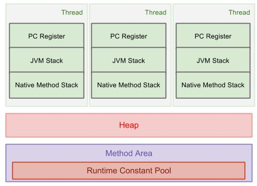
JVM内存结构主要分为三大块：堆、栈和方法区。每个线程都有自己的一个虚拟机栈，栈保存着局部变量以及所有调用的方法的参数和返回值。其他线程无法访问该线程的栈中数据。栈仅能保存基本类型和对象引用，对象是存放在堆中的。堆内存和方法区中的静态变量等数据可以被线程共享，而同步处理针对的正是共享数据。
上面采用JVM的内存结构来说明共享数据和synchronized的关系其实不太严谨，synchronized是java内存模型封装了底层后提供的一个关键字，针对的是主存和线程的工作内存而言，而JAVA的内存模型是一种抽象概念，并不能和JVM的内存结构相提并论。因为这里讲述的是JVM层面如何实现synchronized，所以就将栈的部分区域数据和线程的工作内存联系起来。
看下这段代码生成的.class文件，用以了解synchronized对方法和代码块所做的不同处理：
1 | 1.class SynchronizedDemo { |
反编译后：
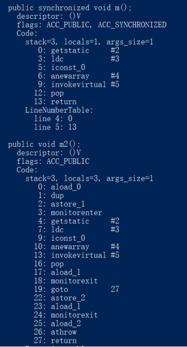
synchronized修饰的方法在字节码中添加了一个ACC_SYNCHRONIZED的flags，同步代码块则是在同步代码块前插入monitorenter，在同步代码块结束后插入monitorexit。这两者的处理是分别是这样的：当线程执行到某个方法时，JVM会去检查该方法的ACC_SYNCHRONIZED访问标志是否被设置，如果设置了那线程会去获取这个对象所对应的monitor对象（每一个对象都有且仅有一个与之对应的monitor对象）,获取成功后才执行方法体，方法执行完再释放monitor对象，在这一期间，任何其他线程都无法获得这个monitor对象。而线程执行同步代码块时遇到的monitorenter和monitorexit指令依赖monitor对象完成。这两者实现的方式本质上无区别，只是方法的同步是一种隐式的方式，不通过字节码实现。
同步和monitor有关，而monitor则和对象头有关。
这里讲一下java的对象模型。在java中，万物皆对象，而一个对象Object是一个类Class的实例。对象保存在堆中，而对象引用存放于栈中，JVM为了描述对象的结构设计了一套OOP-Klass Model（基于HotSpot虚拟机），OOP（ordinary object pointer）指的是普通的对象指针，Klass用于描述对象实例的具体类型。虽然JVM基于C++实现，但并不是将java对象直接转换为了C++的对象，这和多态的实现有一定的关系。
C++中通过虚函数表实现多态，每个包含虚函数的类都有一个虚函数表(virtual table)，虚函数表中排列着按顺序声明的所有虚函数，类对象的地址空间最靠前的位置保存着指向虚函数表的指针。C++在运行时并不维护类型信息，在编译时直接将子类的虚函数表中的虚函数替换为子类重写的方法。
java在运行时会维护类型信息以及类的继承体系，每一个类会对应方法区中的一个存放类信息的数据结构，可以通过class对象访问此数据结构。其中类型信息superclass属性指示了其超类，还有这个类所对应的方法表。在堆上创建的对象都有一个指向方法区类型信息数据结构的指针，通过这个指针可以确定对象的类型。
HotSpot设计者将对象模型拆为oop和klass，oop不含任何虚函数，而klass则含有虚函数表。klass是java类在c++中的对等体，一般在JVM加载.class文件时，在方法区中创建instanceKlass表示元数据，包括常量、字段和方法等。Klass主要有两个功能：
实现语言层面的java类
实现java对象的分发功能
oop是JVM在运行的过程中遇到new对象时创建的，对象包含对象头、实例数据和填充数据三部分，其中对象头包含两部分：
Mark Word，存储对象运行时记录信息
Klass Pointer，即元数据指针，指向方法区的instanceKlass实例
1 | class Model { |
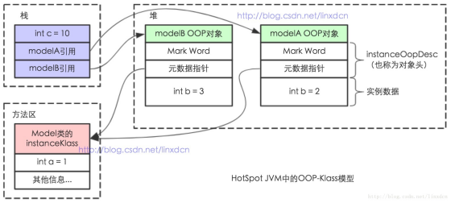
感受过具体例子后再来看一下oop-klass结构图：
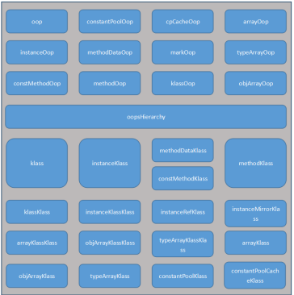
在openJdk中的oopsHierarchy.hpp文件中定义了oop和klass体系。
1 | // 定义了oops共同的基类 |
程序每创建一个对象时便会在JVM中创建与之相对应的一个OOP对象，instanceOopDesc表示类实例，arrayOopDesc表示数组,它们的基类OopDesc定义在oop.hpp中：
1 | 1.private: |
这一段代码表示对象头，_mark指的对象头中的Mark Word,联合体_metadata中的_klass表示未压缩的Klass指针，_compressed_klass表示压缩的Klass指针，这个Klass指针指向一个Klass对象。
1 | 1.//klassOop的一部分，用来描述语言层的类型 |
JVM会为每个已经加载了的类创建一个instanceKlass，也就是说当编译成.class文件并完成类加载后便会得到一个instanceKlass对象,instanceKlass表示为JVM层的java类。
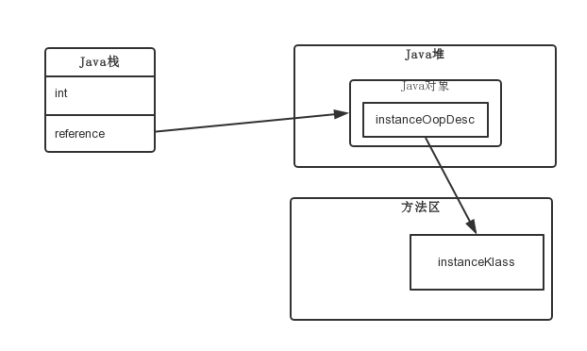
在JVM中，对象存在于内存中的基本形式为oop，对象对应的class也是一个对象，JVM使用klassOop来描述这个class，而klassOop又被klassklass所描述。关于对象和数组链大致如下
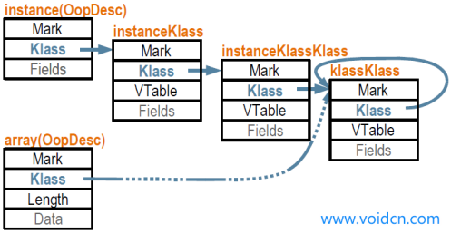
结合JAVA内存模型，看一下new一个对象所经历的JVM操作：
- 判断对象对应的类是否加载、链接和初始化
JVM首先会根据所给的参数去常量池检查是否有这个类的符号引用，并检查这个符号引用所代表的的类是否被类加载器加载、链接和初始化过。如果没有则进行类加载。此阶段JVM会生成instanceKlass对象表示这个类的运行时元数据。
- 为对象分配内存
类加载完成后会在堆中划分一块内存给对象。内存分配根据JAVA堆是否规整分两种方式：
·指针碰撞：如果java堆是规整的，所有使用过的内存放一边，空闲的在另一边，此时会将指针的指示器向空闲的那端移动一段与对象头大小一致的空间。
·空闲列表：如果java堆不是规整的，JVM会维持一个列表记录空间的使用情况，分配内存时从列表中查询一个大小足够的内存分配出来，然后更新列表记录。
- 处理并发安全问题
创建对象是频繁的动作，需要解决并发问题，有两种方式：
- 对分配内存空间的动作进行同步处理，比如采用CAS算法并配上失败重试的方式保证更新操作的原子性。
- 每个线程在java堆中预先分配一小块内存，称之为本地线程分配缓冲（Thread Local Allocation Buffer，TLAB）当线程需要分配内存时在对应的TLAB上分配，当该TLAB用完再分配新的TLAB是才进行同步操作。是否使用TLAB可通过-XX:+/-UserTLAB参数进行设定。
- 初始化分配到的内存空间
将分配的内存，除了对象头都初始化为0。在此阶段生成instanceOop表示java类的对象，JVM栈中会持有此对象的引用。
设置对象的对象头
执行init方法进行初始化
初始化对象的成员变量、调用类的构造方法
monitor
前面说到monitor与对象头有关，现在分别介绍monitor和对象头（Mark Word）的结构（基于32位JVM）
monitor意为监视者，每个对象都有一个自己的监视锁。可以把monitor理解为一个特殊建筑物，这个建筑物有走廊(_EntryList)，有等候室（_WaitSet）以及一间只能容纳一个特殊访客的房间(_owner)。可以想象这样一个场景：教父在这间特殊的房子里倾听访客的要求，走廊上排着其他想寻求帮助的客人，还有一间房子是给暂时中断服务的客人等待的。示意图如下：
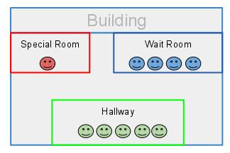
monitor也是一个对象，在C++中由ObjectMonitor实现，其数据结构如下：
1 | 1.ObjectMonitor() { |
可以关注下几个比较关键的属性：
owner 指向持有ObjectMonitor对象的线程
WaitSet 存放处于wait状态的线程
EntryList 存放处于等待锁block状态的线程队列
recursions 锁的重入次数
count 记录该线程获取锁的次数
多个线程在竞争共享数据执行到同步代码块时，会在_EntryList中排队，获得对象monitor的线程在进入_Owner区域时会将monitor的_owner设为当前线程，同时计数器_count加1。若持有mnitor对象的线程调用了wait()方法会释放monitor，_owner为null，计数器_count减一，进入到_WaitSet集合中等待被唤醒。以下是获得锁和释放锁的流程图：
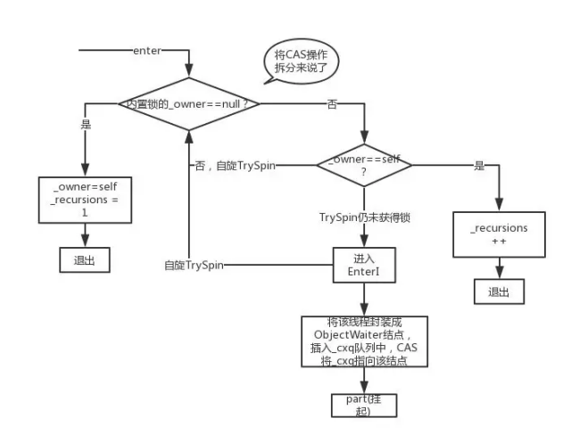
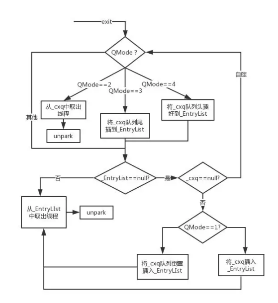
线程获取对象锁的过程并不是简单的设置，而是采用一定的策略，比如当前只有一个线程访问同步代码，则设置偏向锁，避免多次CAS操作，适应性自旋锁则可以减少阻塞导致的线程切换。在jdk1.6之前，调用objectMonitor的enter和exit是和操作系统的互斥量mutex直接映射的，同步操作时无可避免会导致核心态和用户态切换等问题，所以把这种锁称为重量锁。
在描述为锁优化和锁膨胀技术前，看下和monitor有关的对象头结构：
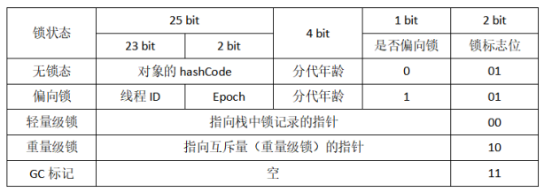
对象头存放着对象的hashCode、锁标志位以及GC分代年龄等信息。由图中可知对象有五种状态四种锁，用1bit表示是否为偏向锁。
- 偏向锁
偏向锁的目标是减少在无竞争其只有一个线程使用锁的情况下使用轻量锁产生的性能消耗。轻量锁在申请和释放锁时都会做一次CAS，而偏向锁只在申请的时候做一次CAS。第一个访问同步代码块的线程申请锁时在mark word中CAS记录owner，如果记录成功则偏向锁获取成功，标志位偏向锁，否则说明有其他的线程在竞争，膨胀为轻量锁。
- 轻量锁
轻量锁的目标是减少无实际竞争情况下使用重量锁产生的性能消耗。使用轻量锁时无需使用metux互斥量，仅仅将Mrak Word中的部分字节CAS更新指向线程栈中的Lock Record（每个线程在JVM中都有一个自己的栈，可记录线程和方法调用的基本信息），如果成功则获取轻量锁成功，在对象头中标志位轻量锁，否则说明当前发生了竞争，膨胀为重量锁。
- 自旋锁
自旋锁可以优化因阻塞而引起的线程切换。当竞争不激烈且持有锁的时间不长时，并不让线程挂起等待锁的释放，而是让线程做一个空循环的自旋操作，如果在循环结束后获得锁则说明自旋锁成功，否则会阻塞自己。自适应自旋锁是自旋锁的基础上自己调整自己。比如针对同一个同步代码块做自旋锁操作时，如果经常没获取成功，则下一次就要增加时长（当然并不能无限增大，自旋锁针对的是持有锁时间短的情况，在其他场景下自旋锁就会白白浪费CPU时间）
- 重量锁
重量锁直接调用objectMonitor的enter和exit，它和操作系统的互斥量直接对应，系统调用会引起用户态和和心态的切换等问题，性能消耗大。
- 锁消除
有时候虽然对代码块进行了同步操作，但是是多数的的时候JIT编译器会在编译同步代码块时取消对这部分代码的同步。JIT(just in time)编译器会利用逃逸分析技术
判断同步代码所使用的锁对象是否只能怪被一个线程访问而不发布到其他线程。比如在一个方法中声明一个对象，在方法中利用这个对象进行同步操作，除此方法外其他地方都没用到这个对象，那这个同步操作将会被消除，因为当方法执行完后这个对象也会被回收，其他线程自然访问不到该对象，也就没必要做同步操作。
- 锁粗化
锁粗化和锁消除相反，是将同步范围扩大的操作。在一般开发中，提倡减少锁的粒度，但有时候对一段同步代码频繁地使用，比如在循环体内做同步操作，JIT发现一系列的操作都在对同一个对象进行反复加锁和解锁时，则会将锁同步的范围扩散至整个操作序列的外部。
介绍完锁的优化技术后，配合下图可以更好地理解synchronized的原理。
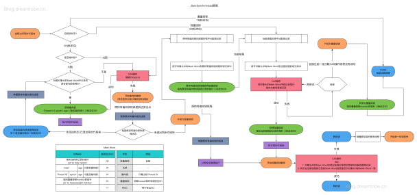